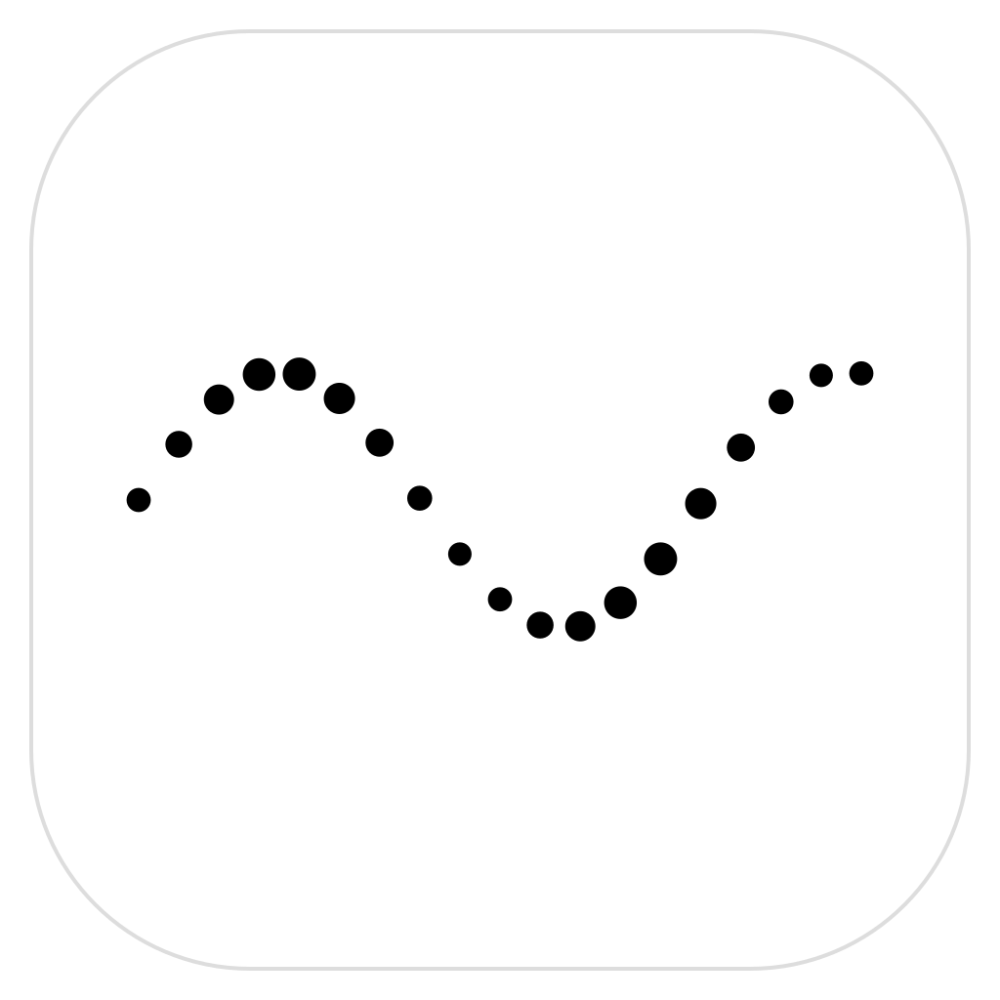
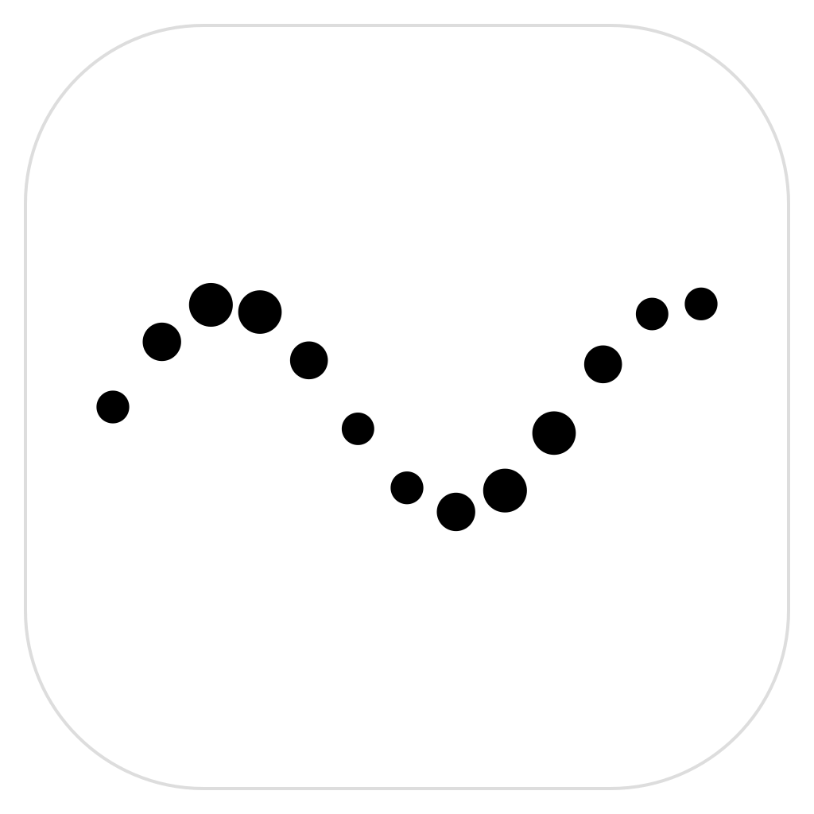
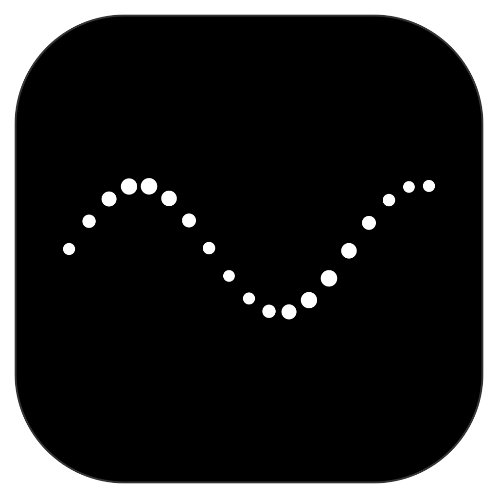
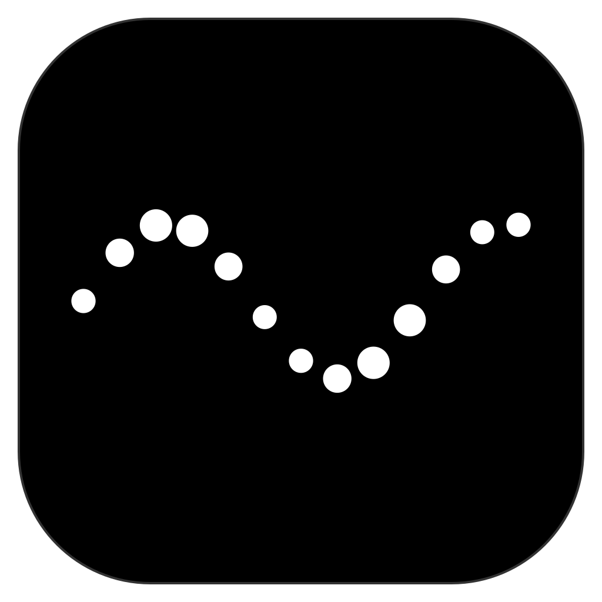

16 32 48

16 32 48The site icon and favicon follow system appearance. The Icon Composer package contains light and dark variants. PNG exports are 1024 × 1024.
Native compilation, asset catalog appearance inspection, PNG dimensions, browser appearance switching, ZIP integrity, and git diff --check passed. The light ICNS fallback was inspected at 32px and 256px.
The website, prototypes, and icon assets were updated, and the matching assets are applied in the localflow app checkout. Dock behavior has not been tested in a running app. The older-macOS ICNS fallback uses the light icon.
A single Swift generator rebuilds the vector artwork, web assets, and PNG exports. Produced and checked by the main agent.